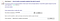
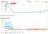
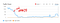
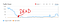

Dead Website Helium.com case Story

Helium.com was a content website, in its early days, this website was getting at its peak more than 100k visits per month (between 2010 to 2011). This was a website like these blogging platforms that we have nowadays.
As far as my search could lead me this is the only screenshots of this website that I got

But you can jump backward and see the website using Wayback machine.
On May 25, 2012, Google updated its algorithm by publishing Penguin 1.1
Here is what happened to helium.com

As you can see they just started losing traffic day by day, month by mouth
Losing half of their traffic coming from Google searches
The rate of decrease in traffic was big but another Google update was released in March 2013
and the losses in traffic for helium.com became more and more severe.

At the end of 2013, this website was completely dead getting almost zero traffic from google searches.

Your website can have the same story if you don't follow google algorithm updates news and try to meet the criteria that the update defines as best practices.
An update can kill here one example. We will see in the near future more examples of the past link that I will show you. The goal is to let you know that you are running a big risk of not preparing your website to be ready for the google CVW update coming in May 2021.
Please consider that helium.com is now a cryptocurrency startup and this website is live. this article has nothing to do with the current website hosted at helium.com